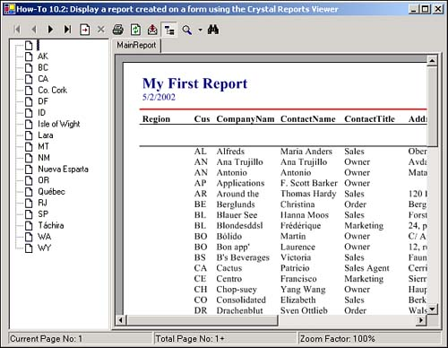
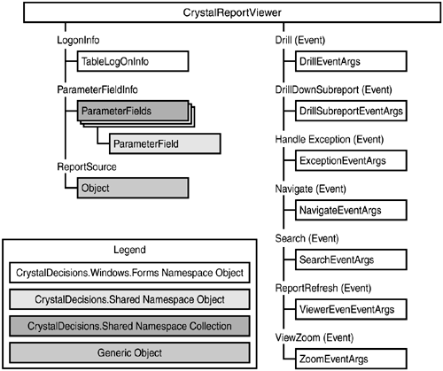
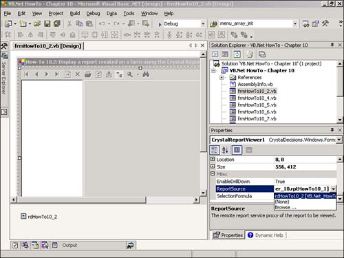
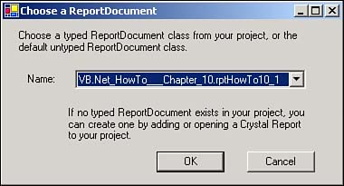
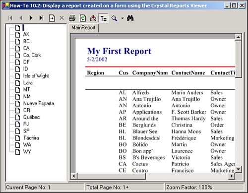

10.2 Display a Report That Was Created
The report doesn't do me much good in Design mode. How do I go about viewing the report?
Technique
You can review a report in a couple of ways. You can view a report either using a Windows Form or a Web Form. Either way, you will also use a control called the Crystal Report Viewer.
Introducing the Crystal Report Viewer
The Crystal Report Viewer is a control that is available in the Toolbox. It is the last control by default. Crystal Report Viewer does far more than just let you view your document on the form. With the Viewer, you can do any of the following:
View the report on the form.
Zoom in and out on the document.
Expand and collapse groupings on the document.
Print from the Viewer.
Export from the Viewer.
Move around in the document
Search for text within the report.
You can see an example of the Crystal Report Viewer on a Windows Form in Figure 10.11, where the example form from this How-To is displayed.

Sometimes you might not want the user to have all the features that come with the Viewer. The good news is that the Viewer actually has its own object model whereby you can set some of the properties at design time or runtime. The Viewer even has an event model that you can program. You can see the object model for the Windows Form CrystalReportViewer in Figure 10.12.

Although you can make the Viewer stand on its head using the object model, to get started, you really only have to set one property: the ReportSource.
Just as it sounds, the ReportSource tells the Viewer which report to display. You can set the ReportSource in a variety of ways. You can set the ReportSource property to the file path and name of a report, or you can create what is called a strongly typed report document.
Specifying the ReportSource by Using the Report
To specify a report file, click on the down arrow in the ReportSource property, and choose (Browse). The Open an Existing Crystal Report dialog box opens. There, you can look for the report that you want to assign within your project folder.
The bad part about assigning the report file directly is that when you move the application, the file path is not updated. A better way to assign the ReportSource is to use a Report Document to strongly type the report.
Specifying the ReportSource Using a Strong Typed Report
When you're using strong typed reports, you can move your application and the report file without having to re-establish the file path to the report. To accomplish this, you use what is called a Report document. You can find the Report document in the Component list. In there, it is called ReportDocument.
When you pull the ReportDocument component onto your form, you are asked to supply a report to be strong typed. After you have chosen your report, the ReportDocument appears in your Component tray. When you assign the ReportSource, the ReportDocument appears first in the list (see Figure 10.13).

Steps
Open and run the Visual Basic .NET-Chapter 10 solution. Click on the button labeled How-To 10.2. You immediately see the report show up that was created in the last How-To. Play with the toolbar buttons on the Viewer to see how they work. When you maximize the form, you the Viewer expands as well. That is because the Viewer is anchored (see Figure 10.14).
Create a Windows Form.
Drag a CrystalReportViewer control from the toolbox onto the form.
Drag a Report document from the Component list onto the form. Type the report name you created in the first How-To (see Figure 10.15).

Tip
 |
After you have clicked OK to accept the Report document, you might want to set the Name property of the control to a name with an rd prefix. I named mine rdHowTo10_2. That way, in later code, I know I am dealing with a ReportDocument control.
|
Set the ReportSource property of the CrystalReportViewer control to the name of your Report document.
Set the Anchor property of the Viewer to be Top, Bottom, Left, Right. This ensures that the Viewer fills the form, regardless of the size of the form.

Comments
That's it, if you open the form now, you will see the report displayed in the form. You get so many features with the Crystal Report Viewer just by dumping it on the form with no code.